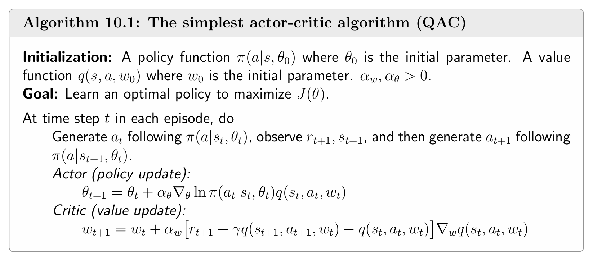
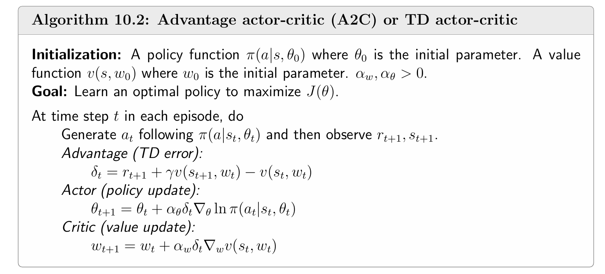
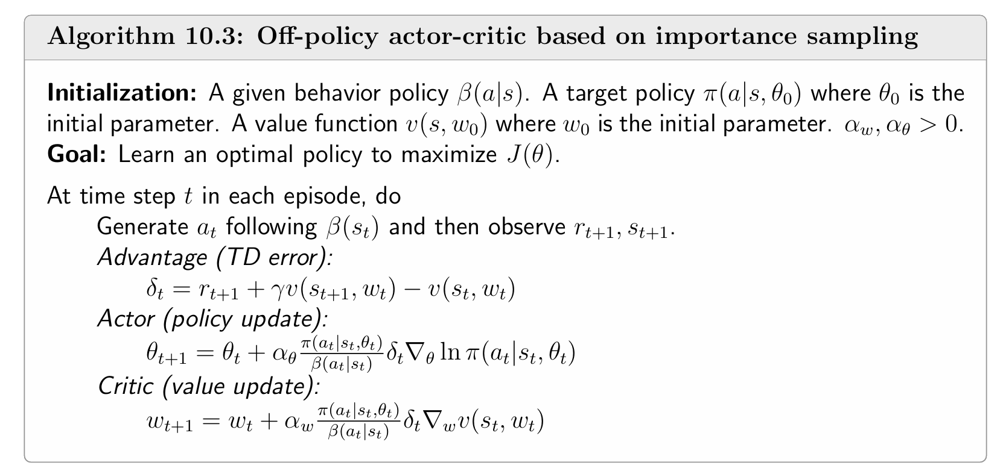
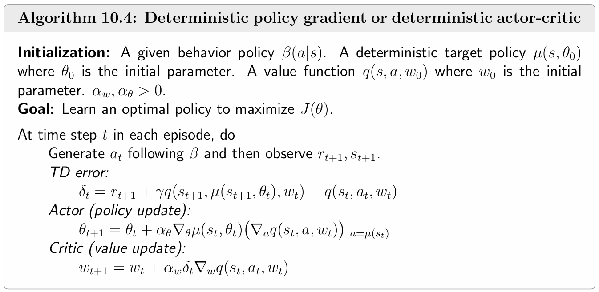

Actor-Critic方法是强化学习中一类重要的算法，它融合了**策略梯度（Policy Gradient）和价值估计（Value Estimation）**两种思想。其名称源于算法内部的两大组件：
Actor-Critic 方法本质上是策略梯度算法的扩展——当策略梯度算法中 qt(st,at) 使用TD学习而非 MC 估计时，便得到了 Actor-Critic 方法。
QAC：最简单的 Actor-Critic 算法
Q Actor-Critic（QAC） 是最基础的Actor-Critic算法，它通过将策略梯度与 Sarsa 价值估计结合，直观地展示了Actor-Critic的核心思想。
从 policy gradient 到 Actor-Critic
回顾策略梯度算法的随机梯度上升更新公式：
θt+1=θt+αθ∇θlnπ(at∣st,θt)qt(st,at)
该公式有三个关键元素：
- Actor（策略更新）：θt+1=θt+αθ∇θlnπ(at∣st,θt)qt(st,at)
- Critic（价值估计）：需要估计 qt(st,at)
- 两者结合：策略更新依赖于价值估计
因此，qt(st,at) 的估计方法直接决定了算法的名称：
- 使用 MC 估计 → REINFORCE（上一章）
- 使用值函数估计 → Actor-Critic（本章）
伪代码

注意 Critic 更新公式正是 Sarsa 的价值更新公式，即用 (st,at,rt+1,st+1,at+1) 五元组进行 TD 更新。因此 QAC 是on-policy 的。
Advantage Actor-Critic（A2C）
Advantage Actor-Critic（A2C） 在 QAC 的基础上引入了基线（Baseline）概念，其核心思想是用相对价值（优势值）替代绝对价值（q 值）来更新策略，从而降低估计方差。
基线不变性
策略梯度有一个重要性质：在期望意义下，对 qπ(S,A) 减去一个仅依赖于状态 S 的基线函数 b(S)，梯度保持不变。
即对于任意标量函数 b(S)，有：
ES∼η,A∼π[∇θlnπ(A∣S,θt)qπ(S,A)]=ES∼η,A∼π[∇θlnπ(A∣S,θt)(qπ(S,A)−b(S))]
证明：
只需证明 ES∼η,A∼π[∇θlnπ(A∣S,θt)b(S)]=0：
ES∼η,A∼π[∇θlnπ(A∣S,θt)b(S)]=s∈S∑η(s)a∈A∑π(a∣s,θt)∇θlnπ(a∣s,θt)b(s)=s∈S∑η(s)a∈A∑∇θπ(a∣s,θt)b(s)=s∈S∑η(s)b(s)a∈A∑∇θπ(a∣s,θt)=s∈S∑η(s)b(s)∇θa∈A∑π(a∣s,θt)=s∈S∑η(s)b(s)∇θ1=0.
基线的作用：降低方差
令
X(S,A)≐∇θlnπ(A∣S,θt)[qπ(S,A)−b(S)]
从而真实的梯度为 E[X(S,A)]。由于我们通过随机采样来近似 E[X]，因此 X 的方差越小越好（这样任意样本 x 都能很好地近似 E[X]）。 事实上，虽然 X 的期望不变，但方差 var(X) 会随基线改变。因此我们的目标是选择最优基线 b∗(s) 来最小化 var(X)。
最优基线为：
b∗(s)=EA∼π[∥∇θlnπ(A∣s,θt)∥2]EA∼π[∥∇θlnπ(A∣s,θt)∥2qπ(s,A)],s∈S
证明思路：最小化 tr[var(X)] 等价于最小化 E[XTX]，对 b(s) 求导令其为零即可。
然而，在实际应用中，最优基线的表达式过于复杂，难以计算。此时若忽略权重 ∥∇θlnπ∥2，可得到次优但简洁的基线：
b†(s)=EA∼π[qπ(s,A)]=vπ(s)
碰巧的是，这里的次优基线就是状态价值 vπ(s)。因此，最常用的基线就是状态价值 vπ(s)。
优势函数
当选取 b(s)=vπ(s) 时，梯度变为：
θt+1=θt+αE[∇θlnπ(A∣S,θt)δπ(S,A)]
其中 δπ(S,A) 称为 advantage Function（优势函数）：
δπ(S,A)≐qπ(S,A)−vπ(S)
直观理解：
- vπ(s)=∑aπ(a∣s)qπ(s,a) 是动作价值的平均值
- 若 δπ(s,a)>0，说明动作 a 优于平均水平（应该增加其概率）
- 若 δπ(s,a)<0，说明动作 a 劣于平均水平（应该降低其概率）
随机梯度版本：
θt+1=θt+α∇θlnπ(at∣st,θt)[qt(st,at)−vt(st)]=θt+α∇θlnπ(at∣st,θt)δt(st,at),
其中 qt(st,at) 和 vt(st) 是 qπ(θt)(st,at) 和 vπ(θt)(st) 的近似。
A2C
在实际实现中，优势函数 δt 既可以通过 MC 方法估计，也可以用 TD 方法估计。前者称为带基线的 REINFORCE，后者称为 advantage actor-critic（A2C）。注意到优势函数可以使用 TD error 近似：
qt(st,at)−vt(st)≈rt+1+γv(st+1,wt)−v(st,wt)
这个近似是合理的，因为：
qπ(st,at)−vπ(st)=E[Rt+1+γvπ(St+1)−vπ(St)∣St=st,At=at]
使用 TD 误差的优势：只需要一个神经网络来表示 vπ(s)，而不需要同时维护 vπ(s) 和 qπ(s,a) 两个网络。
伪代码

可以发现 critic 也带有项 δt，这是因为价值网络的 SGD 更新公式使用了 TD-error rt+1+γv(st+1,wt)−v(st,wt)。
注意：A2C 是 on-policy 的，且策略 π(θt) 是随机的（非确定），天然具有探索性，无需 ε-greedy。
Off-Policy Actor-Critic
前面介绍的 REINFORCE、QAC、A2C 这样的 policy gradient 方法都是 on-policy 的——行为策略和目标策略相同。本节引入 **Importance Sampling（重要性采样）**技术，将 Actor-Critic 扩展至 off-policy 场景。
重要性采样
考虑一个随机变量 X∈X，假设 p0(X) 是概率分布，目的是要估计 EX∼p0[X]。假设采样得到 i.i.d.（independent identical distribution，独立同分布）的样本 {xi}i=1n。考虑样本的以下两种情形：
- 若样本是在分布 p0 下采集的，则样本均值 xˉ=n1∑i=1nxi 可以估计 EX∼p0[X]；
- 若样本是在另一个分布 p1 下采集的，则样本均值 xˉ 就不能用于估计 EX∼p0[X]，因为它是 EX∼p1[X] 的无偏估计，而对于 EX∼p0[X] 是有偏估计。
对于第二种情形，就需要通过重要性采样来估计 EX∼p0[X]。
重要性采样是一种通用技术，用于用来自分布 p1 的样本估计关于分布 p0 的期望。核心公式为
EX∼p0[X]=x∑p0(x)x=x∑p1(x)f(x)p1(x)p0(x)x=EX∼p1[f(X)]
因此，估计 EX∼p0[X] 转变为了估计 EX∼p1[f(X)]。若样本 {xi}i=1n 来自 p1，则
EX∼p0[X]=EX∼p1[f(X)]≈fˉ=n1i=1∑nf(xi)=n1i=1∑n重要性权重p1(xi)p0(xi)xi
其中 p1(xi)p0(xi) 称为重要性权重。
重要性采样的关键不是说原始分布 p0 未知，所以我们要用 p1 来做样本生成；而是因为相同的样本量，在 p0 分布下难以采集或采样得到的样本方差较大，而在 p1 分布下容易采集或采样的样本方差较小。在重要性采样中，原始分布 p0 是已知的。
重要性采样关键要求：若 p0(x)=0，则必须有 p1(x)=0，否则估计会产生偏差。
Off-Policy 策略梯度定理
设 β 为行为策略（Behavior Policy），用于生成样本；π 为目标策略（Target Policy），是我们要学习的策略。为了能够利用行为策略 β 产生的样本来优化目标策略 π，重新定义了目标函数，使其状态分布变为 dβ：
J(θ)=s∈S∑dβ(s)vπ(s)=ES∼dβ[vπ(S)]
其中 dβ 是行为策略 β 下状态的平稳分布。
在折扣情形 γ∈(0,1) 下，J(θ) 的梯度为
∇θJ(θ)=ES∼ρ,A∼β重要性权重β(A∣S)π(A∣S,θ)∇θlnπ(A∣S,θ)qπ(S,A)
上式即为 off-policy 策略梯度定理。其中状态分布 ρ 为：
ρ(s)≐s′∈S∑dβ(s′)πPr(s∣s′),s∈S
与上一章 on-policy 情形的区别是多了一个重要性权重 π/β，且动作采样分布是 A∼β 而非 A∼π
在这种情况下，基线不变性同样成立：
∇θJ(θ)=ES∼ρ,A∼β[β(A∣S)π(A∣S,θ)∇θlnπ(A∣S,θ)(qπ(S,A)−b(S))]
Off-Policy Actor-Critic 算法
选取 b(S)=vπ(S)，并用 TD-error 近似优势函数，得到随机梯度上升更新公式
θt+1=θt+αθβ(at∣st)π(at∣st,θt)∇θlnπ(at∣st,θt)δt
其中 δt=rt+1+γv(st+1,wt)−v(st,wt)。
至此，通过重要性采样将 actor-critic 转为了 off-policy 的方法。
伪代码

注意，除了 Actor，Critic 也被重要性采样修正为 off-policy。此外行为策略 β 需要对所有 π(a∣s)>0 的 (s,a) 满足 β(a∣s)>0 。
确定性 Actor-Critic
前面介绍的策略梯度方法都要求策略随机（对于任意 (s,a) 都有 π(a∣s,θ)>0）。本节介绍确定性策略 a=μ(s,θ)，其优势在于天然 off-policy 且能有效处理连续动作空间。
确定性策略梯度定理
确定性策略梯度定理：
∇θJ(θ)=ES∼η[∇θμ(S)(∇aqμ(S,a))a=μ(S)]
其中 η 是状态分布。
与随机情形的关键区别是梯度中不涉及对动作的期望——无需对动作采样，因此确定性策略梯度（deterministic policy gradient, DPG）方法天然是 off-policy 的。
两种目标函数的梯度
度量1：平均价值
J(θ)=ES∼d0[vμ(s)]=s∈S∑d0(s)vμ(s)
其中 d0 是状态初始分布（与 μ 无关）。
折扣情形下的确定性策略梯度：
∇θJ(θ)=ES∼ρμ[∇θμ(S)(∇aqμ(S,a))a=μ(S)]
其中 ρμ(s)=∑s′∈Sd0(s′)Prμ(s∣s′)，Prμ(s∣s′)=∑k=0∞γk[Pμk]s′s。
度量2：平均奖励
J(θ)=rˉμ=s∈S∑dμ(s)rμ(s)=ES∼dμ[rμ(S)]
其中 rμ(s)=E[R∣s,a=μ(s)]，dμ 是 μ 下的状态平稳分布。
未折扣情形下的确定性策略梯度：
∇θJ(θ)=ES∼dμ[∇θμ(S)(∇aqμ(S,a))a=μ(S)]
其中 dμ 是策略 μ 下的平稳分布。
确定性 Actor-Critic 算法
基于梯度公式的随机梯度上升更新公式：
θt+1=θt+αθ∇θμ(st)(∇aq(st,a,wt))a=μ(st)
伪代码

- Actor 是 off-policy 的，因为 DPG（确定性策略梯度）中不涉及对动作的采样。
- Critic 也是 off-policy 的，因为其需要的经验样本为 (st,at,rt+1,st+1,a~t+1)，其中 a~t+1=μ(st+1)。注意到该经验样本包含了两个策略，分别是策略 β 在 st 时采取动作 at，和策略 μ 在 st+1 时采取的动作 a~t+1，并且 a~t+1 并不会用于下一次的环境交互。因此 μ 不是行为策略，从而 Critic 是 off-policy 的。